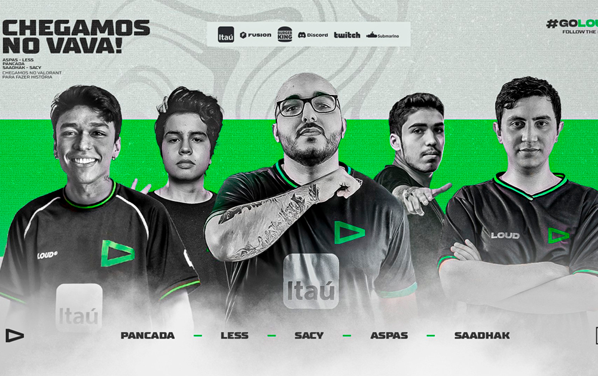
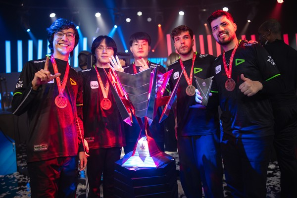

LOUD NO VALORANT
Início
A loud iniciou sua trajetória no cenário competitivo de valorant em 2022, onde se consagrou campeã de competições importantes. O time que havia sido criado em 2022 ganhou três títulos, sendo dois nacionais e um internacional. O time foi considerado por muitos um dos melhores, se não o melhor time do Brasil. Na sua formação inicial o time contava com grandes nomes como Gustavo "Sacy" Rossi, o argentino Matias "Saadhak" Delipetro, Eric "Aspas" Santos, Felipe "Less" Basso, Brayan "pANcada" Luna. Atualmente a equipe passou por uma reformulação, com a saída dos jogadores Sacy e Aspas, tivemos a entrada de Cauan "Cauanzin" Pereira e Arthur "Tuyz" Vieira.
Títulos
- Titulos oficiais
- VCT Brasil 2022 1°split
- VCT Brasil 2022 2°split
- VALORANT Champions 2022
- VCT Americas 2023
- Cauan "Cauanzin" Pereira
- Arthur "Tuyz" Vieira.
- Brayan "pANcada" Luna
- Felipe "Less" Basso
- Matias "Saadhak" Delipetro
- Tecnico: sem tecnico até o presente momento.
LOUD NO LEAGUE OF LEGENDS
Início
A Loud iniciou seu projeto no Lol (League of Legends) em 2021. A line up inicial não ficou marcada por grandes conquistas, fazendo com que gerasse insatisfação da torcida. Após pressão da torcida a loud fez a sua primeira reformulação, o time inicial que era formado por, Igor "DudsTheBoy" Lima, Denilson "Ceos" Gonçalves, Rodrigo "Tay" Panisa, Matheus "DyNquedo" Rossini e Finn-Lucas "Don Arts" Salomon. Então com a reformulação tivemos a saída dos jogadores, DudsTheBoy, Tay, DyNquedo e Don Arts. Restando apenas Ceos da line up original, com isso foram incorporados ao time os jogadores Thiago "Tinowns" Sartori, Leonardo "Robo" Souza, Jong-hoon "Croc" e Diego "Brance" Amaral. Mais tarde com a saída de Ceos e Brance, foi introduzido ao time o jogador Ygor "RedBert" Freitas e Moon Geom-su "Route". Com a nova formação a equipe conseguiu conquistar o seu primeiro título, a conquista do CBLOL de 2022 impulsionou o time, se consagrando tetracampeã com títulos consecutivos do torneio Brasileiro de League of Legends.
Time atual
- Thiago "Tinowns" Sartori
- Leonardo "Robo" Souza
- Jong-hoon "Croc"
- Ygor "RedBert" Freitas
- Moon Geom-su "Route"
- Tecnico:Seok-hee "Stardust"
Títulos
- Titulos oficiais
- CBLOL 2022 - 2° split
- CBLOL 2023 - 1° split
- CBLOL 2023 - 2° split
- CBLOL 2024 - 1° split